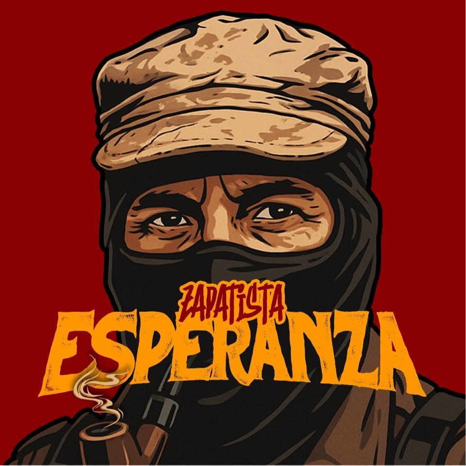
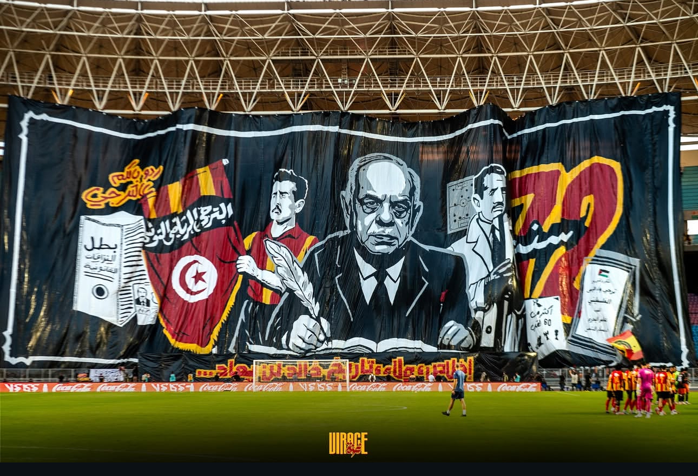
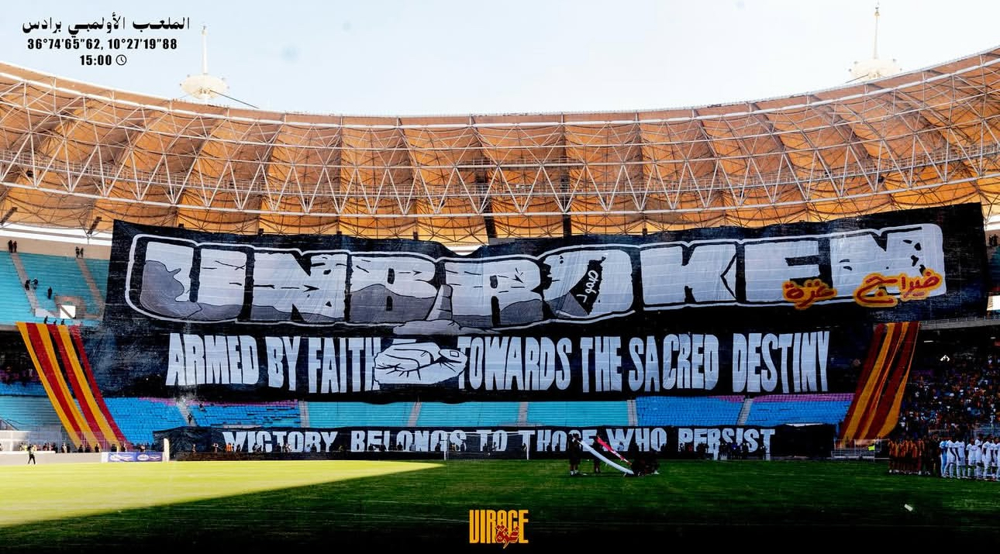
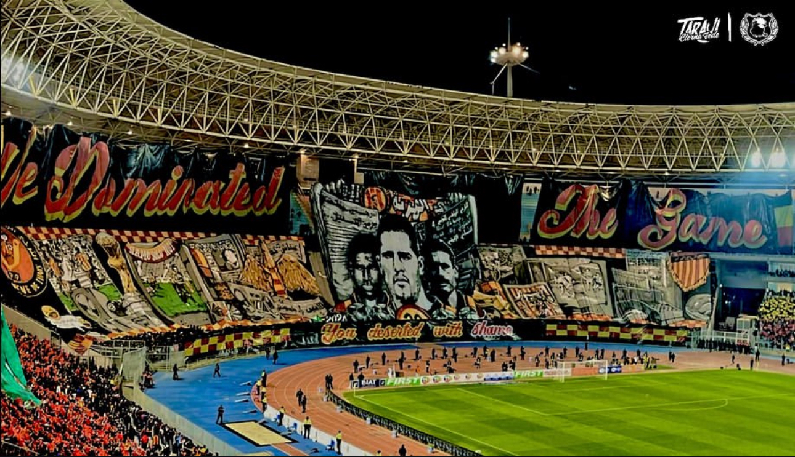

العودة للصفحة الرئيسيةروح المدرجات… صوت الحرية… ووفاء لا يموت
زاباتيستا ترجي يجمع بين حركة "جيش زاباتيستا للتحرر الوطني" (EZLN) المكسيكية، وهي حركة اشتراكية مناهضة للعولمة تسعى لحقوق السكان الأصليين، وبين جمهور الترجي الرياضي التونسي. بعض مجموعات الألتراس، مثل "الصعاليك" (Zapatista Esperanza)، تبنت اسم "الزاباتيستا" للتعبير عن روح المقاومة والتمرد والالتزام القوي بالفريق على غرار فلسفة الحركة المكسيكية، خاصة وأن تأسيس الترجي عام 1919 يتزامن مع فترة نشاط إميليانو زاباتا، قائد الحركة المكسيكية الشهير.
الأصل (المكسيك): حركة زاباتيستا (EZLN) هي حركة ثورية تأسست في ولاية تشياباس المكسيكية في التسعينيات، مستلهمة من القائد المكسيكي إميليانو زاباتا، وتناضل من أجل العدالة الاجتماعية للسكان الأصليين.
التطبيق (تونس): جماعات الألتراس التابعة للترجي التونسي، وتحديداً "Zapatista Esperanza" (أمل الزاباتيستا)، تبنت هذا الاسم لتعكس روح التمرد والتحدي والسعي للدفاع عن حقوق جماهير الفريق، مثلما فعل الزاباتيستا في المكسيك.
الرمزية: يربط المشجعون بين تاريخ تأسيس الترجي (1919) وتاريخ وفاة زاباتا (1919)، معتبرين أن المقاومة مستمرة، وأنهم يمثلون صوت الشعب والمظلومين، كما يوحي اسم "زاباتيستا".
تُعد مجموعة "زاباتيستا إسبيرانزا" (Zapatista Esperanza) التابعة لنادي الترجي الرياضي التونسي رائدة في فن "التيفو" (Tifo) و**"الكراكاج" (Craquage)**، وتمتلك أرقاماً قياسية في هذا المجال. تُعرف المجموعة بإبداعها الكبير في تصميم وتنفيذ اللوحات الجماهيرية الضخمة التي تحمل رسائل فنية وسياسية واجتماعية عميقة. الإبداع في "التيفو" "التيفو" هو العرض البصري الذي يقدمه المشجعون في المدرجات باستخدام قطع قماشية ملونة (كولورز)، أعلام، أو لافتات ضخمة (باشاج). تتميز "زاباتيستا" بما يلي: الرسائل العميقة: غالباً ما تتجاوز "تيفوات" الزاباتيستا مجرد دعم الفريق، بل تعكس التزامهم بالأيديولوجية المستوحاة من الحركة الزاباتيستا المكسيكية. تتضمن الرسائل مفاهيم الثورة، مناهضة الظلم، المطالبة بالحرية، والعدالة الاجتماعية. الشمولية والتعقيد: تشتهر المجموعة بتنفيذ "تيفوات" معقدة تشمل كامل المدرج الجنوبي (الكورفا سود) لملعب رادس، وتتطلب تنظيماً دقيقاً ومزامنة مثالية بين آلاف المشجعين. التقدير العالمي: تم اختيار إحدى "دخلات" (تيفو) مجموعة "زاباتيستا إسبيرانزا" كواحدة من أفضل 10 "تيفوات" في العالم لسنة 2023. فن "الكراكاج" (Craquage) يشير مصطلح "كراكاج" إلى الاستخدام المكثف والمذهل للألعاب النارية، الشماريخ، والقنابل الدخانية لخلق جو بصري ناري وكثيف الدخان في المدرجات. وتتميز "زاباتيستا" في هذا المجال: الكثافة: تشتهر المجموعة بقدرتها على إشعال عدد هائل من الشماريخ في وقت واحد، مما يخلق سحباً ضخمة من الدخان الأحمر والأصفر (ألوان النادي) تغطي سماء الملعب. التوقيت والاحتفالية: يتم تنفيذ "الكراكاج" في لحظات معينة ومؤثرة، مثل بداية المباريات الهامة (الديربي أو النهائي)، أو عند تسجيل أهداف حاسمة، مما يضفي طابعاً احتفالياً ملحمياً ومخيفاً للخصم في آن واحد. المخاطرة والشغف: يتطلب "الكراكاج" شغفاً كبيراً وتحدياً للقوانين أحياناً، وهو جزء لا يتجزأ من ثقافة الألتراس التي تقدر التضحية من أجل خلق مشهد فريد.


